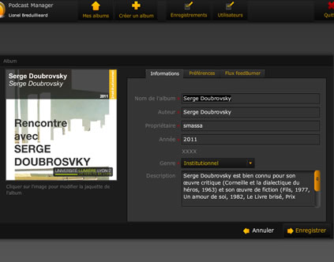
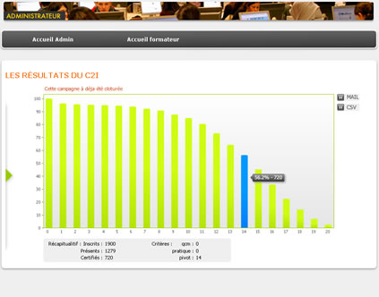

Expériences Diplômes »
- Podcast Manager : Régie de production de podcast pour l’enseignement
-
Conception et déploiement d’un système de gestion de podcast, introduisant la métaphore d’une bibliothèque multimédia et basé sur l'outil Podcast Producer d’Apple.
- 
Technologies utilisées: SDK Flex, Ruby on Rails et Podcast Producer.
- Visu : Plateforme de tutorat en ligne (fin du projet: octobre 2011)
-
Dans le cadre d’un projet ANR (Lyon1 / Lyon2 / Liris / Icar / Tecfa) dédié à la visualisation interactive de traces et à l’annotation collaborative synchrone : R&D, création des maquettes d’interfaces, développement Client (Flex) et serveur (Java). Première version mise en place dans le cadre d’une formation de master FLE entre des tuteurs français et des étudiants américains (UC Berkeley).
Technologies utilisées: SDK Flex, RED5 (serveur de media open source en Java).
- C2I Lyon2 : Outils d’aide à la décision pour la certification au référentiel national C2i
-
Mise en place d'un outils d'aide à la décision pour la comission c2i à lyon 2. Cet outils permet de visualiser la repatition des resultats selon différents critères de notation.
- 
Technologies utilisées: MTASC, Eclipse, ActionScript 2
- Cooplang Admin : Gestion des utilisateurs pour la suite d’application Cooplang
-
Création d'un interface d'administration pour les tuteurs et les administrateur de la communauté cooplang. Gestion simplifiée des problématiques de creations de groupes composés d'étudiants, encadrés par des tuteurs.
Technologies utilisées: Flash 8
- Portails Lyon 2 : Assistance à maîtrise d’ouvrage pour la migration des portails institutionnels
-
Intervention sur plusieurs domaines, interface utilisateur, ergonomie, maquettage et suivi d'intégration.
Technologies utilisées: Fireworks, HTML, CSS
- AmeeDirectory : annuaire d’entreprise spécialisé
-
Participation à la création d’une interface riche en Flex pour un annuaire d’entreprise ainsi qu'un catalogue produit pour la branche AMEE de Sanofi Aventis.
Technologies utilisées: Flex SDK
- Mission Lycée : Cédérom de présentation de l’université et de ses formations
-
Création et développement des cédéroms (tirés à 10.000 exemplaires) pour le service de la mission Lycée. Mise en place d’une solution réutilisable, basée sur des contenus dynamiques (XML), pour faciliter leur réactualisation annuelle. Conception d’une stratégie de chargement dynamique qui permet son déploiement online / offline de manière automatique.
Technologies utilisées: Flash, Photoshop, Fireworks, Eclipse
- Portails web: Sites internet de l’université Lyon 2
-
Infographie, conception et intégration des 3 portails institutionnels de l’université. Mise en place d’une architecture mutualisée pour la gestion des sites de composantes, laboratoires, associations (environ 80 sites SPIP) basée sur un modèle personnalisable...
Technologies utilisées: JSP, HTML, CSS, Javascript, SPIP, PHP
- BVS : Le bureau virtuel scolaire
-
En partenariat avec France Télécom R&D et Demarque : iconographie, interface utilisateur et infographie.
Technologies utilisées: HTML, CSS, graphisme, Fireworks
Compétences
-
Plateforme Flash
- *** Actionscript
- *** Flex
- ** Air
-
Développement web
- *** HTML
- *** CSS
- ** Javascript, JQuery
- ** PHP
- ** XML
- * XSLT
- * RoR
-
Base de données
- *** MySQL
- ** SQLite
- * Oracle
-
Outils de développment
- *** Flash Builder
- *** Eclipse
- ** TextMate
- ** Git, Indefero
- ** Ant
- * SVN
-
Logiciels graphiques
- *** Fireworks
- ** Photoshop
- ** Illustrator
- * Indesign
Diplômes « Expériences Loisirs »
- - Lyon
DESS Intégration Multimédia.
- - Avignon
Maîtrise d’IUP « Génie Mathématique et Informatique, option ingénierie de la communication ».
Obtention du titre d'ingénieur maître. - - Avignon
1ère année de DEUG MIAS.
- - Marseille
DUT Génie des Télécommunications et Réseaux.
- - Avignon
Bac STI Electronique.
Loisirs « Expériences
- Internet
- Veille active dans le domaine des interfaces riches et rédaction d’articles sur le blog La Fabrick Interactive
- Voyages
- L'Europe à vélo, d'Istanbul à Vannes, avec ma compagne et nos petites jumelles. Thaïlande, Hongrie, Croatie, Maroc, Italie, Corse, Allemagne, États-Unis.
- Infographie
- Création graphique (site internet, affiches, stickers) pour des associations, groupes de musique, salles de concert.
- Pratiques culturelles
- Cinéma, danse, bandes dessinées, concerts.
- Musique
- Contrebasse, bassiste dans un groupe de dix musiciens. Sortie d'un CD 10 titres autoproduit.
- Vie associative
- Secrétaire du BDE de l’IUP GMI d’Avignon de1999 à 2000. Encadrant chez les scouts de France de 1997 à 2000.